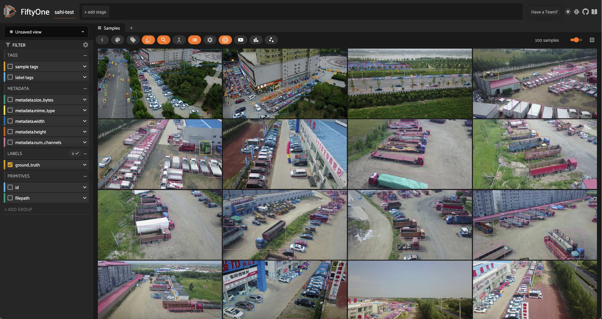
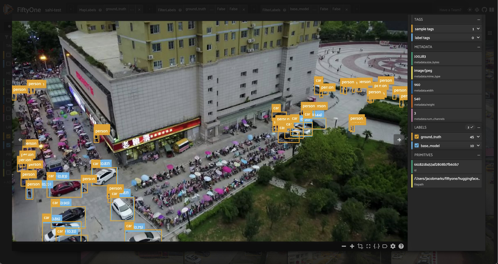

Detecting Small Objects with SAHI ¶¶

Object detection is one of the fundamental tasks in computer vision, but detecting small objects can be particularly challenging.
In this walkthrough, you’ll learn how to use a technique called SAHI (Slicing Aided Hyper Inference) in conjunction with state-of-the-art object detection models to improve the detection of small objects. We’ll apply SAHI with Ultralytics’ YOLOv8 model to detect small objects in the VisDrone dataset, and then evaluate these predictions to better understand how slicing impacts detection performance.
It covers the following:
-
Loading the VisDrone dataset from the Hugging Face Hub
-
Applying Ultralytics’ YOLOv8 model to the dataset
-
Using SAHI to run inference on slices of the images
-
Evaluating model performance with and without SAHI
Setup and Installation ¶¶
For this walkthrough, we’ll be using the following libraries:
-
fiftyonefor dataset exploration and manipulation -
huggingface_hubfor loading the VisDrone dataset -
ultralyticsfor running object detection with YOLOv8 -
sahifor slicing aided hyper inference
If you haven’t already, install the latest versions of these libraries:
[62]:
pip install -U fiftyone sahi ultralytics huggingface_hub --quiet
Note: you may need to restart the kernel to use updated packages.
Let’s get started! 🚀
First, import the necessary modules from FiftyOne:
[1]:
import fiftyone as fo
import fiftyone.zoo as foz
import fiftyone.utils.huggingface as fouh
from fiftyone import ViewField as F
Now, let’s download some data. We’ll be taking advantage of FiftyOne’s Hugging Face Hub integration to load a subset of the VisDrone dataset directly from the Hugging Face Hub:
[17]:
dataset = fouh.load_from_hub("Voxel51/VisDrone2019-DET", name="sahi-test", max_samples=100, overwrite=True)
Downloading config file fiftyone.yml from Voxel51/VisDrone2019-DET
Loading dataset
Importing samples...
100% |█████████████████| 100/100 [33.1ms elapsed, 0s remaining, 3.0K samples/s]
Before adding any predictions, let’s take a look at the dataset:
[22]:
session = fo.launch_app(dataset)
Session launched. Run `session.show()` to open the App in a cell output.

Standard Inference with YOLOv8 ¶¶
Now that we know what our data looks like, let’s run our standard inference pipeline with a YOLOv8 (large-variant) model. We can load the model from Ultralytics and then apply this directly to our FiftyOne dataset using apply_model(), thanks to FiftyOne’s Ultralytics integration:
[26]:
from ultralytics import YOLO
ckpt_path = "yolov8l.pt"
model = YOLO(ckpt_path)
## fiftyone will work directly with the Ultralytics.YOLO model
dataset.apply_model(model, label_field="base_model")
100% |█████████████████| 100/100 [25.0s elapsed, 0s remaining, 4.0 samples/s]
Alternatively, if we want FiftyOne to handle the model downloading and location management for us, we can load the same model directly from the FiftyOne Model Zoo:
[ ]:
## comment this out if you want to use the model from the zoo
# model = foz.load_zoo_model("yolov8l-coco-torch")
# ckpt_path = model.config.model_path
# dataset.apply_model(model, label_field="base_model")
Now that we have predictions, we can visualize them in the App:
[ ]:
session = fo.launch_app(dataset)

Looking at the model’s predictions next to the ground truth, we can see a few things.
First and foremost, the classes detected by our YOLOv8l model are different from the ground truth classes in the VisDrone dataset. Our YOLO model was trained on the COCO dataset, which has 80 classes, while the VisDrone dataset has 12 classes, including an ignore_regions class. To simplify the comparison, we’ll focus on just the few most common classes in the dataset, and will map the VisDrone classes to the COCO
classes as follows:
[6]:
mapping = {"pedestrians": "person", "people": "person", "van": "car"}
mapped_view = dataset.map_labels("ground_truth", mapping)
And then filter our labels to only include the classes we’re interested in:
[20]:
def get_label_fields(sample_collection):
"""Get the (detection) label fields of a Dataset or DatasetView."""
label_fields = list(
sample_collection.get_field_schema(embedded_doc_type=fo.Detections).keys()
)
return label_fields
def filter_all_labels(sample_collection):
label_fields = get_label_fields(sample_collection)
filtered_view = sample_collection
for lf in label_fields:
filtered_view = filtered_view.filter_labels(
lf, F("label").is_in(["person", "car", "truck"]), only_matches=False
)
return filtered_view
[51]:
filtered_view = filter_all_labels(mapped_view)
[52]:
session.view = filtered_view.view()

Now that the classes are aligned and we’ve reduced the crowding in our images, we can see that while the model does a pretty good job of detecting objects, it struggles with the small objects, especially people in the distance. This can happen with large images, as most detection models are trained on fixed-size images. As an example, YOLOv8 is trained on images with maximum side length 640640. When we feed it an image of size 19201920 x 10801080, the model will downsample the image to 640640 x 360360 before making predictions. This downsampling can cause small objects to be missed, as the model may not have enough information to detect them.
Detecting Small Objects with SAHI ¶¶
Theoretically, one could train a model on larger images to improve detection of small objects, but this would require more memory and computational power. Another option is to introduce a sliding window approach, where we split the image into smaller patches, run the model on each patch, and then combine the results. This is the idea behind Slicing Aided Hyper Inference (SAHI), which we’ll use to improve the detection of small objects in the VisDrone dataset!

Illustration of Slicing Aided Hyper Inference. Image courtesy of SAHI Github Repo.
The SAHI technique is implemented in the sahi Python package that we installed earlier. SAHI is a framework which is compatible with many object detection models, including YOLOv8. We can choose the detection model we want to use and create an instance of any of the classes that subclass sahi.models.DetectionModel, including YOLOv8, YOLOv5, and even Hugging Face Transformers models. We will create our model object using SAHI’s AutoDetectionModel class, specifying the model type and
the path to the checkpoint file:
[7]:
from sahi import AutoDetectionModel
from sahi.predict import get_prediction, get_sliced_prediction
[11]:
detection_model = AutoDetectionModel.from_pretrained(
model_type='yolov8',
model_path=ckpt_path,
confidence_threshold=0.25, ## same as the default value for our base model
image_size=640,
device="cpu", # or 'cuda'
)
Before we generate sliced predictions, let’s inspect the model’s predictions on a trial image, using SAHI’s get_prediction() function:
[60]:
result = get_prediction(dataset.first().filepath, detection_model, verbose=0)
print(result)
<sahi.prediction.PredictionResult object at 0x2b0e9c250>
Fortunately, SAHI results objects have a to_fiftyone_detections() method, which converts the results to FiftyOne detections:
[61]:
print(result.to_fiftyone_detections())
[<Detection: {\
'id': '661858c20ae3edf77139db7a',\
'attributes': {},\
'tags': [],\
'label': 'car',\
'bounding_box': [\
0.6646394729614258,\
0.7850866247106482,\
0.06464214324951172,\
0.09088355170355902,\
],\
'mask': None,\
'confidence': 0.8933132290840149,\
'index': None,\
}>, <Detection: {\
'id': '661858c20ae3edf77139db7b',\
'attributes': {},\
'tags': [],\
'label': 'car',\
'bounding_box': [\
0.6196376800537109,\
0.7399617513020833,\
0.06670347849527995,\
0.09494832356770834,\
],\
'mask': None,\
'confidence': 0.8731599450111389,\
'index': None,\
}>, <Detection: {\
'id': '661858c20ae3edf77139db7c',\
'attributes': {},\
'tags': [],\
'label': 'car',\
'bounding_box': [\
0.5853352228800456,\
0.7193766276041667,\
0.06686935424804688,\
0.07682359483506944,\
],\
'mask': None,\
'confidence': 0.8595829606056213,\
'index': None,\
}>, <Detection: {\
'id': '661858c20ae3edf77139db7d',\
'attributes': {},\
'tags': [],\
'label': 'car',\
'bounding_box': [\
0.5635160446166992,\
0.686444091796875,\
0.06365642547607422,\
0.06523607042100694,\
],\
'mask': None,\
'confidence': 0.854781448841095,\
'index': None,\
}>, <Detection: {\
'id': '661858c20ae3edf77139db7e',\
'attributes': {},\
'tags': [],\
'label': 'car',\
'bounding_box': [\
0.7365047454833984,\
0.8709894816080729,\
0.07815799713134766,\
0.06583930121527778,\
],\
'mask': None,\
'confidence': 0.8482972383499146,\
'index': None,\
}>, <Detection: {\
'id': '661858c20ae3edf77139db7f',\
'attributes': {},\
'tags': [],\
'label': 'car',\
'bounding_box': [\
0.4387975692749023,\
0.7973368326822917,\
0.07478656768798828,\
0.08685709635416666,\
],\
'mask': None,\
'confidence': 0.8482537865638733,\
'index': None,\
}>, <Detection: {\
'id': '661858c20ae3edf77139db80',\
'attributes': {},\
'tags': [],\
'label': 'car',\
'bounding_box': [\
0.41441831588745115,\
0.7553463971173322,\
0.07797966003417969,\
0.09232432047526042,\
],\
'mask': None,\
'confidence': 0.8444766402244568,\
'index': None,\
}>, <Detection: {\
'id': '661858c20ae3edf77139db81',\
'attributes': {},\
'tags': [],\
'label': 'car',\
'bounding_box': [\
0.4094355583190918,\
0.7256359524197049,\
0.07238206863403321,\
0.07048272026909722,\
],\
'mask': None,\
'confidence': 0.798665463924408,\
'index': None,\
}>, <Detection: {\
'id': '661858c20ae3edf77139db82',\
'attributes': {},\
'tags': [],\
'label': 'car',\
'bounding_box': [\
0.5339123407999674,\
0.6121687712492766,\
0.07190316518147787,\
0.07292734781901042,\
],\
'mask': None,\
'confidence': 0.7936845421791077,\
'index': None,\
}>, <Detection: {\
'id': '661858c20ae3edf77139db83',\
'attributes': {},\
'tags': [],\
'label': 'car',\
'bounding_box': [\
0.03444666067759196,\
0.5164913601345487,\
0.03219949007034302,\
0.06044175889756945,\
],\
'mask': None,\
'confidence': 0.740483820438385,\
'index': None,\
}>, <Detection: {\
'id': '661858c20ae3edf77139db84',\
'attributes': {},\
'tags': [],\
'label': 'car',\
'bounding_box': [\
0.3923538525899251,\
0.6745626378942419,\
0.06798810958862304,\
0.07528584798177083,\
],\
'mask': None,\
'confidence': 0.6714914441108704,\
'index': None,\
}>, <Detection: {\
'id': '661858c20ae3edf77139db85',\
'attributes': {},\
'tags': [],\
'label': 'car',\
'bounding_box': [\
0.5216399192810058,\
0.5886645846896701,\
0.06560036341349283,\
0.059334818522135416,\
],\
'mask': None,\
'confidence': 0.6649367809295654,\
'index': None,\
}>, <Detection: {\
'id': '661858c20ae3edf77139db86',\
'attributes': {},\
'tags': [],\
'label': 'car',\
'bounding_box': [\
0.5096873283386231,\
0.5273054334852431,\
0.0551149050394694,\
0.07670672381365741,\
],\
'mask': None,\
'confidence': 0.6273276805877686,\
'index': None,\
}>, <Detection: {\
'id': '661858c20ae3edf77139db87',\
'attributes': {},\
'tags': [],\
'label': 'car',\
'bounding_box': [\
0.37222995758056643,\
0.5739804303204572,\
0.06103067398071289,\
0.06263699001736112,\
],\
'mask': None,\
'confidence': 0.5973840355873108,\
'index': None,\
}>, <Detection: {\
'id': '661858c20ae3edf77139db88',\
'attributes': {},\
'tags': [],\
'label': 'car',\
'bounding_box': [\
0.05044105052947998,\
0.44830712212456597,\
0.02773451805114746,\
0.054146491156684025,\
],\
'mask': None,\
'confidence': 0.5668562054634094,\
'index': None,\
}>, <Detection: {\
'id': '661858c20ae3edf77139db89',\
'attributes': {},\
'tags': [],\
'label': 'car',\
'bounding_box': [\
0.38649218877156577,\
0.6419422290943287,\
0.0629791259765625,\
0.05787251790364583,\
],\
'mask': None,\
'confidence': 0.525834858417511,\
'index': None,\
}>, <Detection: {\
'id': '661858c20ae3edf77139db8a',\
'attributes': {},\
'tags': [],\
'label': 'car',\
'bounding_box': [\
3.7088990211486816e-05,\
0.5483550460250289,\
0.027724572022755942,\
0.06541680230034722,\
],\
'mask': None,\
'confidence': 0.5090425610542297,\
'index': None,\
}>]
This makes our lives easy, so we can focus on the data and not the nitty gritty details of format conversions.
SAHI’s get_sliced_prediction() function works in the same way as get_prediction(), with a few additional hyperparameters that let us configure how the image is sliced. In particular, we can specify the slice height and width, and the overlap between slices. Here’s an example:
[ ]:
sliced_result = get_sliced_prediction(
dataset.skip(40).first().filepath,
detection_model,
slice_height = 320,
slice_width = 320,
overlap_height_ratio = 0.2,
overlap_width_ratio = 0.2,
)
As a sanity check, we can compare the number of detections in the sliced predictions to the number of detections in the original predictions:
[91]:
num_sliced_dets = len(sliced_result.to_fiftyone_detections())
num_orig_dets = len(result.to_fiftyone_detections())
print(f"Detections predicted without slicing: {num_orig_dets}")
print(f"Detections predicted with slicing: {num_sliced_dets}")
Detections predicted without slicing: 17
Detections predicted with slicing: 73
We can see that the number of predictions increased substantially! We have yet to determine if the additional predictions are valid, or if we just have more false positives. We’ll do this using FiftyOne’s Evaluation API shortly. We also want to find a good set of hyperparameters for our slicing. To do all of these things, we’re going to need to apply SAHI to the entire dataset. Let’s do that now!
To simplify the process, we’ll define a function that adds predictions to a sample in a specified label field, and then we will iterate over the dataset, applying the function to each sample. This function will pass the sample’s filepath and slicing hyperparameters to get_sliced_prediction(), and then add the predictions to the sample in the specified label field:
[70]:
def predict_with_slicing(sample, label_field, **kwargs):
result = get_sliced_prediction(
sample.filepath, detection_model, verbose=0, **kwargs
)
sample[label_field] = fo.Detections(detections=result.to_fiftyone_detections())
We’ll keep the slice overlap fixed at 0.20.2, and see how the slice height and width affect the quality of the predictions:
[92]:
kwargs = {"overlap_height_ratio": 0.2, "overlap_width_ratio": 0.2}
for sample in dataset.iter_samples(progress=True, autosave=True):
predict_with_slicing(sample, label_field="small_slices", slice_height=320, slice_width=320, **kwargs)
predict_with_slicing(sample, label_field="large_slices", slice_height=480, slice_width=480, **kwargs)
100% |█████████████████| 100/100 [13.6m elapsed, 0s remaining, 0.1 samples/s]
04/12/2024 10:06:59 - INFO - eta.core.utils - 100% |█████████████████| 100/100 [13.6m elapsed, 0s remaining, 0.1 samples/s]
Note how these inference times are much longer than the original inference time. This is because we’re running the model on multiple slices per image, which increases the number of forward passes the model has to make. This is a trade-off we’re making to improve the detection of small objects.
Now let’s once again filter our labels to only include the classes we’re interested in, and visualize the results in the FiftyOne App:
[14]:
filtered_view = filter_all_labels(mapped_view)
[98]:
session = fo.launch_app(filtered_view, auto=False)
Session launched. Run `session.show()` to open the App in a cell output.
04/12/2024 10:18:33 - INFO - fiftyone.core.session.session - Session launched. Run `session.show()` to open the App in a cell output.

The results certainly look promising! From a few visual examples, slicing seems to improve the coverage of ground truth detections, and smaller slices in particular seem to lead to more of the person detections being captured. But how can we know for sure? Let’s run an evaluation routine to mark the detections as true positives, false positives, or false negatives, so that we can compare the sliced predictions to the ground truth. We’ll use our filtered view’s evaluate_detections()
method to do this:
Evaluating SAHI Predictions ¶¶
Using FiftyOne’s Evaluation API ¶¶
Sticking with our filtered view of the dataset, let’s run an evaluation routine comparing our predictions from each of the prediction label fields to the ground truth labels. We will use the evaluate_detections() method, which will mark each detection as a true positive, false positive, or false negative. Here we use the default IoU threshold of 0.50.5, but you can adjust this as needed:
[ ]:
base_results = filtered_view.evaluate_detections("base_model", gt_field="ground_truth", eval_key="eval_base_model")
large_slice_results = filtered_view.evaluate_detections("large_slices", gt_field="ground_truth", eval_key="eval_large_slices")
small_slice_results = filtered_view.evaluate_detections("small_slices", gt_field="ground_truth", eval_key="eval_small_slices")
Let’s print a report for each:
[107]:
print("Base model results:")
base_results.print_report()
print("-" * 50)
print("Large slice results:")
large_slice_results.print_report()
print("-" * 50)
print("Small slice results:")
small_slice_results.print_report()
Base model results:
precision recall f1-score support
car 0.81 0.55 0.66 692
person 0.94 0.16 0.28 7475
truck 0.66 0.34 0.45 265
micro avg 0.89 0.20 0.33 8432
macro avg 0.80 0.35 0.46 8432
weighted avg 0.92 0.20 0.31 8432
--------------------------------------------------
Large slice results:
precision recall f1-score support
car 0.67 0.71 0.69 692
person 0.89 0.34 0.49 7475
truck 0.55 0.45 0.49 265
micro avg 0.83 0.37 0.51 8432
macro avg 0.70 0.50 0.56 8432
weighted avg 0.86 0.37 0.51 8432
--------------------------------------------------
Small slice results:
precision recall f1-score support
car 0.66 0.75 0.70 692
person 0.84 0.42 0.56 7475
truck 0.49 0.46 0.47 265
micro avg 0.80 0.45 0.57 8432
macro avg 0.67 0.54 0.58 8432
weighted avg 0.82 0.45 0.57 8432
We can see that as we introduce more slices, the number of false positives increases, while the number of false negatives decreases. This is expected, as the model is able to detect more objects with more slices, but also makes more mistakes! You could apply more agressive confidence thresholding to combat this increase in false positives, but even without doing this the F1F1-score has significantly improved.
Evaluating Performance on Small Objects ¶¶
Let’s dive a little bit deeper into these results. We noted earlier that the model struggles with small objects, so let’s see how these three approaches fare on objects smaller than 32×3232×32 pixels. We can perform this filtering using FiftyOne’s ViewField:
[110]:
## Filtering for only small boxes
box_width, box_height = F("bounding_box")[2], F("bounding_box")[3]
rel_bbox_area = box_width * box_height
im_width, im_height = F("$metadata.width"), F("$metadata.height")
abs_area = rel_bbox_area * im_width * im_height
small_boxes_view = filtered_view
for lf in get_label_fields(filtered_view):
small_boxes_view = small_boxes_view.filter_labels(lf, abs_area < 32**2, only_matches=False)
[111]:
session.view = small_boxes_view.view()

[112]:
small_boxes_base_results = small_boxes_view.evaluate_detections("base_model", gt_field="ground_truth", eval_key="eval_small_boxes_base_model")
small_boxes_large_slice_results = small_boxes_view.evaluate_detections("large_slices", gt_field="ground_truth", eval_key="eval_small_boxes_large_slices")
small_boxes_small_slice_results = small_boxes_view.evaluate_detections("small_slices", gt_field="ground_truth", eval_key="eval_small_boxes_small_slices")
Evaluating detections...
04/12/2024 10:54:36 - INFO - fiftyone.utils.eval.detection - Evaluating detections...
100% |█████████████████| 100/100 [1.1m elapsed, 0s remaining, 7.8 samples/s]
04/12/2024 10:55:44 - INFO - eta.core.utils - 100% |█████████████████| 100/100 [1.1m elapsed, 0s remaining, 7.8 samples/s]
Evaluating detections...
04/12/2024 10:55:44 - INFO - fiftyone.utils.eval.detection - Evaluating detections...
100% |█████████████████| 100/100 [1.2m elapsed, 0s remaining, 6.2 samples/s]
04/12/2024 10:56:59 - INFO - eta.core.utils - 100% |█████████████████| 100/100 [1.2m elapsed, 0s remaining, 6.2 samples/s]
Evaluating detections...
04/12/2024 10:56:59 - INFO - fiftyone.utils.eval.detection - Evaluating detections...
100% |█████████████████| 100/100 [1.4m elapsed, 0s remaining, 5.7 samples/s]
04/12/2024 10:58:23 - INFO - eta.core.utils - 100% |█████████████████| 100/100 [1.4m elapsed, 0s remaining, 5.7 samples/s]
[113]:
print("Small Box — Base model results:")
small_boxes_base_results.print_report()
print("-" * 50)
print("Small Box — Large slice results:")
small_boxes_large_slice_results.print_report()
print("-" * 50)
print("Small Box — Small slice results:")
small_boxes_small_slice_results.print_report()
Small Box — Base model results:
precision recall f1-score support
car 0.71 0.25 0.37 147
person 0.83 0.08 0.15 5710
truck 0.00 0.00 0.00 28
micro avg 0.82 0.08 0.15 5885
macro avg 0.51 0.11 0.17 5885
weighted avg 0.82 0.08 0.15 5885
--------------------------------------------------
Small Box — Large slice results:
precision recall f1-score support
car 0.46 0.48 0.47 147
person 0.82 0.23 0.35 5710
truck 0.20 0.07 0.11 28
micro avg 0.78 0.23 0.36 5885
macro avg 0.49 0.26 0.31 5885
weighted avg 0.80 0.23 0.36 5885
--------------------------------------------------
Small Box — Small slice results:
precision recall f1-score support
car 0.42 0.53 0.47 147
person 0.79 0.31 0.45 5710
truck 0.21 0.18 0.19 28
micro avg 0.75 0.32 0.45 5885
macro avg 0.47 0.34 0.37 5885
weighted avg 0.77 0.32 0.45 5885
This makes the value of SAHI crystal clear! The recall when using SAHI is much higher for small objects without significant dropoff in precision, leading to improved F1-score. This is especially pronounced for person detections, where the F1F1 score is tripled!
Identifying Edge Cases ¶¶
Now that we know SAHI is effective at detecting small objects, let’s look at the places where our predictions are most confident but do not align with the ground truth labels. We can do this by creating an evaluation patches view, filtering for predictions tagged as false positives and sorting by confidence:
[18]:
high_conf_fp_view = filtered_view.to_evaluation_patches(eval_key="eval_small_slices").match(F("type")=="fp").sort_by("small_slices.detection.confidence")
[19]:
session.view = high_conf_fp_view.view()

Looking at these results, we can see that in many cases, our predictions look quite reasonable, and it seems that the ground truth labels are missing! This is certainly not the case for every prediction, but there are definitely enough to motivate a relabeling of the ground truth data. This is where human-in-the-loop (HITL) workflows can be very useful, as they allow human annotators to review and correct the labels. After this process, we can reevaluate our trained models (with or without SAHI) on the updated dataset, and then train new models on the updated data.
Summary ¶¶
In this walkthrough, we’ve covered how to add SAHI predictions to your data, and then rigorously evaluate the impacts of slicing on prediction quality. We’ve seen how slicing-aided hyper-inference (SAHI) can improve the recall and F1F1-score for detection, especially for small objects, without needing to train a model on larger images.
To maximize the effectiveness of SAHI, you may want to experiment with the following:
-
Slicing hyperparameters, such as slice height and width, and overlap.
-
Base object detection models, as SAHI is compatible with many models, including YOLOv5, and Hugging Face Transformers models.
-
Confidence thresholding (potentially on a class-by-class basis), to reduce the number of false positives.
-
Post-processing techniques, such as non-maximum suppression (NMS), to reduce the number of overlapping detections.
-
Human-in-the-loop (HITL) workflows, to correct ground truth labels.
You will also want to determine which evaluation metrics make the most sense for your use case!
Additional Resources ¶¶
If you found this tutorial helpful, you may also be interested in the following resources: